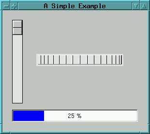
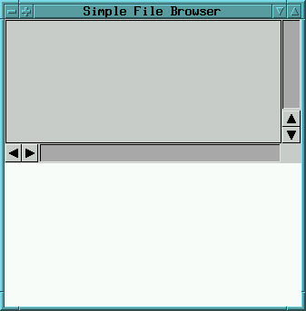
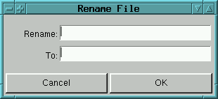

GUI Examples
Index
The following are very simple examples - for real world applications,
"use the source, Luke".
A Simple Example
The following example will give an understanding in value holders. We will
design an application having an interface with several widgets, which operate
on the same value holder:
I. Open a new GUI Painter
II. Switch to the section Misc of the gallery, then drag
a Thumb Wheel Widget and drop it into the
canvas. The same process is done for a Slider Widget
and a Progress Indicator Widget.
III. Arrange components as you like, change the application's name
and resize the canvas.
Now, our canvas should now look more or less like:

IV. Now, we want that all three widgets operate on the same
value holder (i.e. changes in any of the widgets
shall immediately update thei visual stage of the percentage shown in all others). To do this,
you have to specify the same aspect selector for all three widgets
by switching to the section Basics of the control window of the
GUI Painter, and entering the same name (say "percentageValue")
into the entry field Model:
During application startup, the application will be asked for
the aspects (by the interface builder).
Your application should provide those
as ValueHolders (usually, but not limited to).
There are 3 possible techniques to do that:
-
implement a method in the instance protocol, which returns the aspect.
The method should look like:
percentageValue
|holder|
holder := builder bindingAt: #percentageValue.
holder isNil ifTrue:[
builder
aspectAt:#percentageValue
put:(ValueHolder with:0)
].
^ holder
-
As an alternative, the aspect could also be held in an instance variable
(typically, named like the aspect):
as in:
percentageValue
percentageValue isNil ifTrue:[
percentageValue := (ValueHolder with:0)
].
^ percentageValue
(assuming, that the application contains an instance variable
named "percentageValue")
The GUI Painter can automatically generate
aspect methods like the above
(via the 'Generate aspect methods' menu item).
Via the Settings menu, you can control if the aspect method
should use the builders bindings dictionary or use an instance variable
to hold the aspect.
Note: This function will not overwrite existing aspect accessor methods
- your changed methods are safe from being overwritten when this function
is called. This also means, that obsolete aspect methods have to be removed
manually.
-
keep a dictionary containing the aspects
as an instance variable (called aspects - for example) and
set it your applications
initialize-method (which is invoked automatically
after your application got instantiated).
i.e.:
initialize
super initialize.
aspects := IdentityDictionary new.
aspects
at:#percentageValue
put:(ValueHolder with:0).
and provide access to this value by implementing:
aspectFor:aKey
^ aspects
at:aKey
ifAbsent:[super aspectFor:aKey].
If you want an update message to be sent to your application
(whenever an aspect is changed),
you can extent the above method as in:
initialize
|holder|
super initialize.
aspects := IdentityDictionary new.
aspects
at:#percentageValue
put:(holder := ValueHolder with:0).
holder addDependent:self
This will arrange for the #update:with:from:
method to be invoked, whenever a new value is stored into the
valueHolder.
update:something with:aParameter from:someObject
super update:something with:aParameter from:someObject.
...
your update code
...
where
something indicates what
has changed (for example #value, #list,
etc.),
aParameter can be an argument
passed with,
someObject is the value holder
that has invoked the update message.
The advantages of using a dictionary for the aspects are:
-
not having your application clobbered with
many individual aspect access methods
-
the added ability to change the set of aspects dynamically
(for example: in a application having a NoteBookView)
-
no need to know the set of aspects in advance (for example: if sub applications
are contained as widgets)
-
if you already have such a collection at hand (for example: from some kind of
database/record specification) and you want
to open a dialog or other view on those aspects.
V. Save the window spec (by default, it creates a method named
windowSpec on a class named NewApplication)
Now, you are ready to test it by selecting the menu item Test/Start
Application or pressing the button  .
.
The application can also be started in a Workspace by evaluating
"NewApplication open", by the SystemBrowser (double-click on
the classes name), or
by writing a program containing the open-message.
While playing with
the demo, you may notice that the range of the sliders value is 0..100,
while the thumb wheel has a default range of 0..360. To change this, select
the thumb wheel in the GUI Painter, switch to the section Details,
and enter 0, 100, 1 into the entry fields Min:, Max:, and
Step: respectively.
An Advanced Example
A somewhat more complicated example could be an application
which consists of a interface showing a List and a Text Editor widget.
Both widgets are to be aligned vertically, each taking half of the window's
height. The list is going to show a list of file names whose contents
- when selected - is to be displayed in the lower half.
I. Open a new GUI Painter
II. Switch to the section Lists of the widget gallery
and drag a List Widget and drop it into the canvas.
Align the top border of the widget's view to the top border of the canvas,
by pressing the Align/Top button: ![[missing fig.: building]](../../../pictures/AlignTopButton.gif) and the left and right borders by pressing the Align/Left & Right
button:
and the left and right borders by pressing the Align/Left & Right
button: ![[missing fig.: building]](../../../pictures/AlignLeftRightButton.gif) now, your canvas will look somewhat like:
now, your canvas will look somewhat like:

to force the List's vertical size to one half of the canvas window's
height we have to change its bottom to a relative value of "0.5". Switch
to the section Layout/Frame of the control window and change the
value in the fields Bottom: to "0.5" for the relative value and
to "0" for the offset value. To accept it, click on OK.
The same is done to create the Text Editor
Widget in the lower half of the canvas (drag it from the gallery, align
its bottom to the canvas window's bottom and change its top to a relative
value of "0.5").
Finally, your canvas should look like:
III. Now, we have to define the models. In our example, let's
define the name for the List's model access method as fileListHolder
and the name of the Text Editor's access method as fileContentsHolder:.
Like in the example above put the names in the entry fields Model:
for both.
IV. We are now ready to create the code for the application.
This is done in 2 steps:
-
generating the window spec method by selecting File/Save or pressing
the button
 and
and
-
generating stub methods to create & access the models by selecting
Generate/Aspect Methods
You will be asked for a class and method name, when doing the for the
first time. You may want to change the class name to some more useful name.
The name of the window spec method usually needs no renaming. If your application
consists of multiple interfaces, then different names for the window spec
methods are required.
The generated aspect methods contain preferred types of value holder
of the widgets. Here, these are in each case an instance of class ValueHolder
and SelectionInList. You may have to modify the aspect methods,
if these are not correct for your application.
If you start the application, you will recognize that the view of the
file list is still empty. Of course, since the model SelectionInList
is never filled with a list of file names, the view still displays an empty
list. To pass a list of file names, we can set the list in the program
either in the access method, or alternatively redefine one of the application's
startup methods.
Here, let's redefine the postBuildWith: method, which is invoked
during application startup (and provided to concrete subclasses of ApplicationModel
as a hook for specific setup).
Open a System Browser and add following method codes to the application
class in the instance method protocol. For the first method create a new
method category named startup / release:
postBuildWith: aBuilder
super postBuildWith: aBuilder.
self setFileList
The next method does set the list of files. A convenient method category
could be private:
setFileList
|listOfFiles|
"get a list of file names contained in your current directory"
self fileListHolder list: Filename homeDirectory directoryContents.
"reject all sub directories"
listOfFiles := listOfFiles reject: [:name| name asFilename isDirectory].
"put the list into the value holder"
self fileListHolder list: listOfFiles
For the first, the started application displays a list of file names.
V. Finally, we would like to get the contents of the file which
has been selected by the user before. To do this, we have to go back to
the control window, select the widget for the list with the file names,
then choose the section Details.
Here, a callback selector in your application needs to be defined, which
is invoked whenever the selection changes. Let's enter a name for the selector
(say fileNameSelected) into the entry field Select::
Accept the modification and save the window spec.
The application will invoke the fileNameSelected method whenever
a file is selected. Therefore, this method must be implemented by the System
Browser before we can start the application. Add the following method code
to your application class in the method category named user actions
which might be created before:
After starting the application, you can now select the file names in
order to get the file contents:
Adding a Popup Menu
For some widgets a popup menu can be defined accessible by the right mouse
button. In this example, we want to add a popup menu to the view of the
file list. It shall contain the menu items Rename and Remove.
I. Select the widget of the file list and switch to the section
Basics; then enter a selector name for the menu spec method in the
Menu: field (say fileListMenu). Accept the modification
and save the window spec by selecting File/Save.
II. Define the entries of the popup menu. By pressing the button
Menu: at the left side of the menu entry field a Menu Editor appears.
Remove the default first entry, then add two menu items by pressing the
button  .
Enter for the labels of the menu items Rename and Remove
into the entry fields Label:. For the action selectors enter renameFile
and removeFile into the entry fields Action:. After
each edit action accept your modifications. If you have completed your
work with the Menu Editor, you can save the menu spec by pressing the button ,
then close the Menu Editor.
.
Enter for the labels of the menu items Rename and Remove
into the entry fields Label:. For the action selectors enter renameFile
and removeFile into the entry fields Action:. After
each edit action accept your modifications. If you have completed your
work with the Menu Editor, you can save the menu spec by pressing the button ,
then close the Menu Editor.
To get more information about the Menu Editor open the document "Using
the Menu Editor".
III. The last step is to implement the action methods. Open a
System Browser and add following method codes to the method category user
actions:
removeFile
|selectedFileNameString|
"get the selected file name"
selectedFileNameString := self fileListHolder selection.
"open a confirmation dialog"
(self confirm:('Remove ' , selectedFileNameString , '?'))
ifTrue:
[
]
the second method:
renameFile
|selectedFileNameString oldFileNameHolder newFileNameHolder bindings|
"get the selected file name"
selectedFileNameString := self fileListHolder selection.
"put the data into value holders"
oldFileNameHolder := selectedFileNameString
asValue.
newFileNameHolder := '' asValue.
"create the bindings for builder of the dialog"
bindings := IdentityDictionary new.
bindings at: #oldFileName put: oldFileNameHolder.
bindings at: #newFileName put: newFileNameHolder.
"open the dialog"
(self openDialogInterface: #dialogSpecForRenamingFiles withBindings:
bindings)
ifTrue:
[
]
In the last method we want to use a dialog for renaming the files. In the
next chapter we will learn how to implement additional interfaces for dialogs.
Adding a Dialog
Often, your applications requires some dialogs. Dialogs are defined like
the main interface of the application as described above. However, you
should care to give each window spec selector a distinct (and user friendly)
name. In your application dialogs are opened by evaluating the following
code:
...
self openDialogInterface: #dialogSpecSelector
...
In the starting phase the dialog fetches its models through corresponding
access methods from your application.
In some situations, it is more convenient to prepare a collection of
models into a dictionary (associating access selectors to value holder),
and passing this collection to
...
self
openDialogInterface: #nameOfDialogSpecMethod
withBindings: collectionOfBindings
...
Well, let's define the interface of the dialog for the example above:
I. Open a new GUI Painter
II. For the renaming of the files we need to add 2 labels, 2
entry fields and both an OK-button and a Cancel-button. After completed,
the canvas of the dialog should look like this:

III. Define the aspect selectors of the EntryFields
as oldFileName and newFileName. Both the Cancel-
and the OK-button already have default aspects, which are correct for our
need. Finally, make the oldFileName entry field a read-only field, by selecting
the Read Only attribute.
IV. Before saving the window spec, make certain, that the names
of the class and selector are set correctly, i.e. the name of the class
must be the same as the name of the application class, but (!) the name
of the selector must differ from the common used name for the main interface
"windowSpec". A possible way to avoid this could be:
-
naming additional window specs as "windowSpecForTheTypeOfUsing",
-
the window specs for the dialogs could be named as "dialogSpecForTheTypeOfUsing"
In this example, we choose as selector name dialogSpecForRenamingFiles.
Because we pass all binding aspects in a single collection (see last method
code in last chapter), there is no need to generate aspect methods by the
GUI Painter.
Finally, this example is successfully completed. Be careful in using this
simple file browser: Do not remove or rename important files needed by
the operation system.
If you like to play with the previous example, the class of this example
can be found as "SimpleGUIDemoApplication" in the "CodingExamples_GUI"
namespace (autoloaded). Also, the corresponding source code can be found
in "doc/coding/SimpleGUIDemoExample.st".
Hints & Recommendations
The following lists problems encountered by users of the GUI Painter for
your reference and tries to answer common questions:
Be careful with the names of your aspect methods; especially,
never call them value (i.e. avoid names of messages, which
are used throughout the system and have different meaning). Try to choose
selectors like valueOfPersons or listOfAccounts
for example. Avoid redefining methods from classes Object or ApplicationModel
by accident.
-
Hooks for the Application
Your application may redefine some methods from the ApplicationModel
class in order to get control during the build and window open procedure.
This allows for special initialization/startup/cleanup processing to be
done.
The following startup and release messages are of particular interest:
-
preBuildWith: aBuilder
This message is sent right before views of the widgets in the application
are created from the window spec. This message is sent from #allButOpenFrom:
in ApplicationModel (which itself can be redefined). At this
time, no ValueHolders have been created yet - however, your application
may create them with initialized values and place them in the builder's
bindings dictionary (if your aspect accessors return those).
-
postBuildWith: aBuilder
This message is sent after the views of the widgets have been created
but before the application is finally opened. This message is also sent
from #allButOpenFrom:. At this time, all ValueHolders
have been created (by calls to your aspect accessor methods). Typically,
this is a good place to perform any startup actions (such as reading directories,
files etc. which are to be put into the ValueHolders).
-
preOpenWith: aBuilder
This message is sent right before the application's window is opened.
-
postOpenWith: aBuilder
This message is sent after the application's window has been opened.
-
closeRequest / closeRequestFor: aView
These message are sent when the application (or any of your applications
top views) is about to be closed. If you redefine any of those, make certain
that you invoke the original method via a super send - otherwise, your
application may not be closable.
A redefinition of this method is a good place to confirm close requests
of the user to the running application. For example, there can be opened
a dialog asking the user whether the contents of the application.should
be saved or wasted, before the application is going to shut down. If the
user does not confirm, the super send is simply not performed.
![[stx-logo]](../../../icons/stx.gif) Copyright © 1998 eXept Software AG, all rights reserved
Copyright © 1998 eXept Software AG, all rights reserved